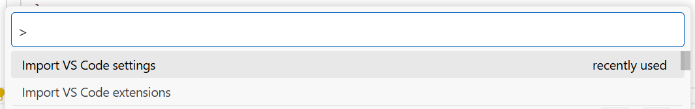
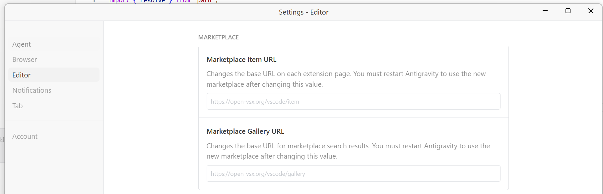
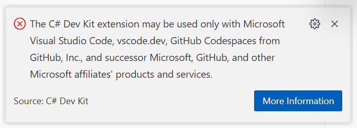
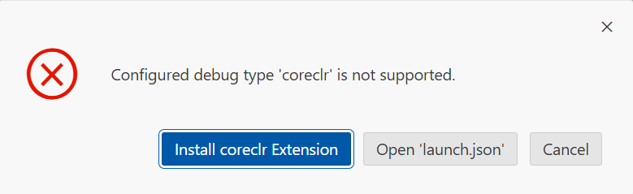
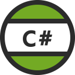
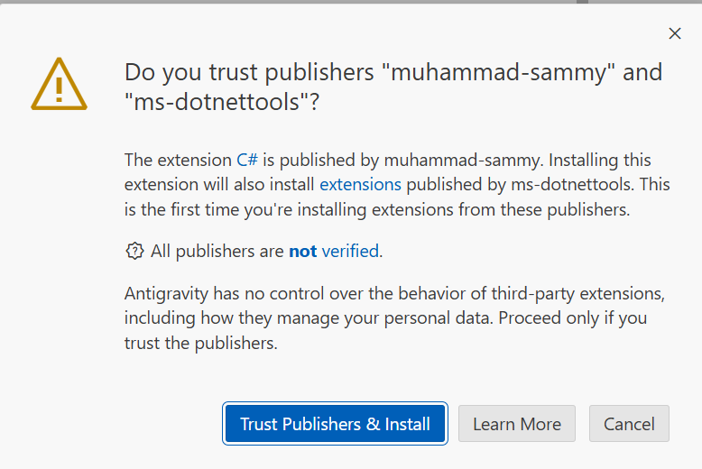

Setting up Google Antigravity (Coming from VSCode)
This post covers setting up Google Antigravity, the new VS Code fork for agentic AI coding, when coming from VS Code.
Primarily I am a .NET / web developer, so some of this post will focus on set up for .NET / C#, but much of it will be common to many developer workflows.
Importing VSCode Settings and Extensions
You cannot use the official Microsoft/GitHub sign-in sync built into VS Code to automatically sync settings with Antigravity IDE. Importing from a VSCode profile export also seems to not be available.
What you can do is use the built in commands for importing settings and extensions.

Changing the Default Extension Marketplace
The default marketplace for Antigravity is https://open-vsx.org/vscode/gallery, but I found it was performing slowly.
To use the Visual Studio Market place, you can change URLs to:
Marketplace Item URL
https://marketplace.visualstudio.com/items
Marketplace Gallery URL
https://marketplace.visualstudio.com/_apis/public/gallery
Use Ctrl + , (or the non Windows equivalent) to open settings and navigate to 'Editor' where you will see inputs for the marketplace URLs.

Unfortunately, even with the marketplace changed, the C# Dev Kit extension cannot be used in Google Antigravity. Like Cursor (Anysphere's AI IDE), Antigravity is a fork of VS Code and is therefore considered a third-party IDE and so not licensed to use the C# Dev Kit.

I will be exploring using ReSharper for Visual Studio Code instead.
Other extensions such as The official C# extension by Microsoft are not installable due to a version conflict, though does not appear to be restricted by licence. The same is true of some other extensions.

In the short term I'm using the following unofficial extension to facilitate basic debugging:
https://open-vsx.org/vscode/item?itemName=muhammad-sammy.csharp


Further Setup
Further setup information will be added here as I make progress in setting up Antigravity.